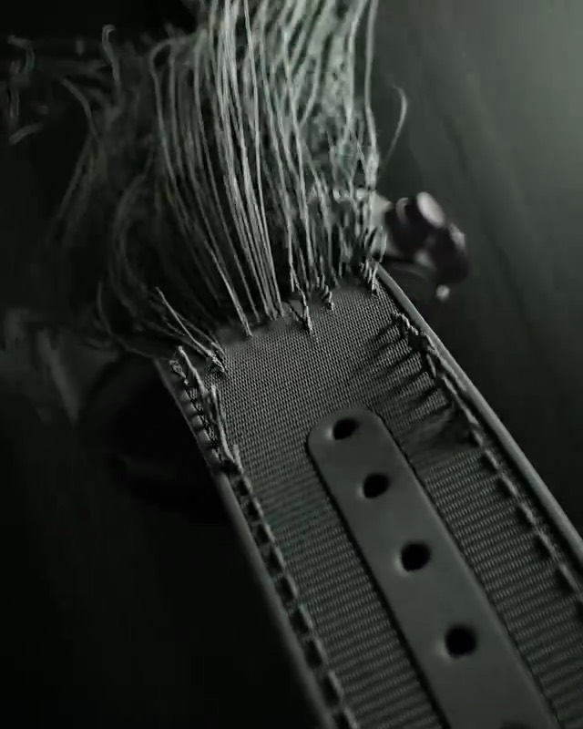

Анимация: хронограф IWC Woodland собирается при прокрутке — из пигмента формируется керамический корпус, механизм собирается слой за слоем, сплетается текстильный ремешок, и в финале появляются готовые часы.
Pilot's Watch Chronograph TOP GUN Edition «Woodland» — пилотский хронограф IWC Schaffhausen в цветной керамике.
Данные по открытым источникам. Точные характеристики, цена и наличие — на официальном сайте IWC.
Цену, наличие и ближайший бутик подскажет официальный сайт IWC Schaffhausen.
